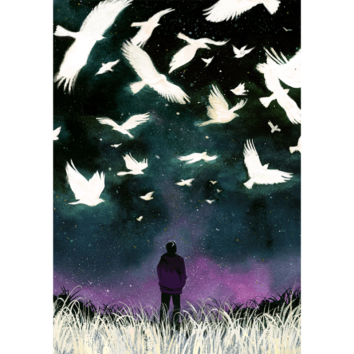
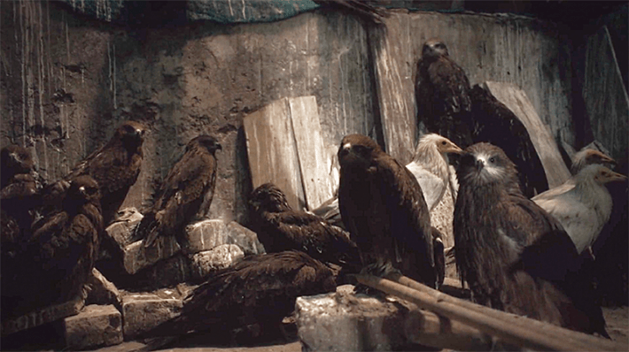
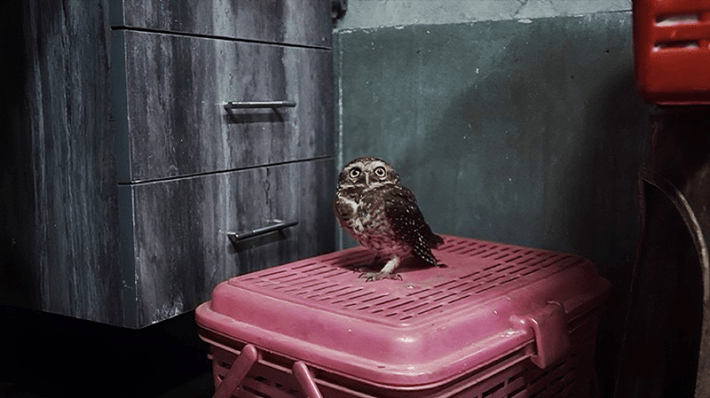
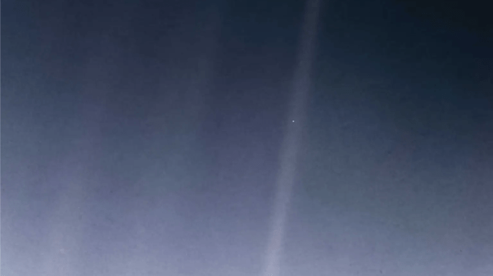
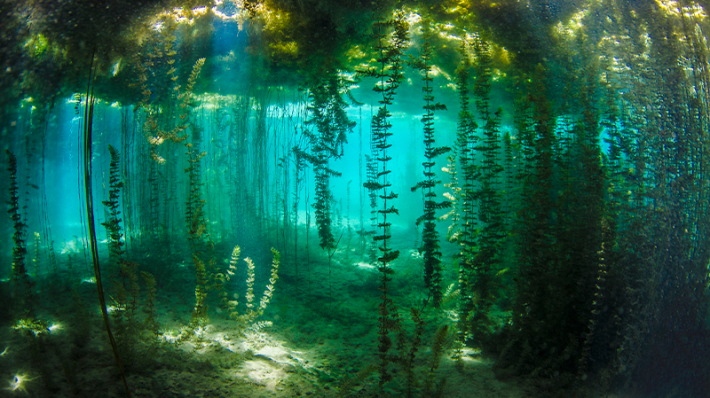

And the Oscar goesto …”
A lifelong biologist, never in my wildest dreams did I imagine myself strapped into a tuxedo at the Academy Awards, heart racing, about to hear whether a film I worked on would win a coveted gold statuette.
Especially for this film. It was a tale of two young brothers in Delhi battling poverty and prejudice who dedicated their lives to treating injured birds. But the opening scene showcased neither the brothers nor the birds, but instead one very long night shot of an abandoned lot … full of rats. As the film’s executive producer, all I could picture in my mind were thousands of potential viewers turning the channel to watch something else, anything else. And I spent a fair amount of time during the editing phase ranting to my colleagues how the first five minutes of the movie were killing any chances of it ever being seen by anybody, anywhere.
Was I ever wrong, stupendously wrong.
One critic began their review by declaring, “The opening shot of Shaunak Sen’s documentary All That Breathes is probably the most beautiful and unnerving thing I saw at this year’s virtual Sundance … What follows is one of the more dreamily provocative documentaries I’ve ever seen.”1
Awe and wonder are the prime emotions that spark and sustain scientific exploration, discovery, and creativity.
The film ended up winning the Grand Jury Prize at Sundance, then the Documentary Prize at the Cannes Film Festival, which launched a magical journey for the brothers, Nadeem Shehzad and Muhammad Saud, and the film team, and a new education for me, as I tried to understand why critics and audiences so willingly and widely opened their hearts to this film.
Eventually, thanks to revelations from psychological research, I got it. I now recognize that director Shaunak Sen and cinematographers Benjamin Bernhard, Riju Das, and Saumyananda Sahi had managed to evoke the powerful experiences of awe and wonder—and in some of the most unexpected and unlikely places. They brought viewers inside a makeshift clinic in a cramped family garage, to be awed by the brothers’ tireless devotion and tender compassion. Outside, the city air is chokingly opaque. But with scenes of black kites, owls, horses, cows, monkeys, turtles, and—yes—rats sharing that harsh environment, the filmmakers elicit wonder at the marvelous richness, even there, of “all that breathes.” Being pulled out of ourselves into another world, viewers experience what psychologists call self-transcendence, a powerful manifestation of awe.

Illustration by Tara Anand
But awe and wonder are much more than just nice feelings or coveted reactions in audiences. A current surge of scientific and popular interest in awe, including two recent books,2, 3 is being spurred by the discovery of a surprising array of positive psychological and social benefits to awe experiences, benefits that strongly suggest we all need more awe and wonder in our lives.
Research reveals that awe and wonder are the prime emotions that spark and sustain scientific exploration, discovery, and creativity, that motivate science learning, and that inspire the public’s interest in science and nature.
At a time when public support for science in the United States is in jeopardy, scientists, educators, and science communicators need to better understand how to reach people at an emotional, not merely an intellectual level. Here, I explore these powerful emotions at the heart of the scientific enterprise—how they are triggered, shape our outlook and behaviors, and how and where everyone can find more awe and wonder.
The Science of Awe
Recall an intense experience when something stopped you in your tracks or took your breath away, when you may have felt goosebumps, your heart race, or perhaps audibly gasped “whoa.” Bask again in that moment before reading on.
Now consider, just what is this feeling? Why did it arise? And what impacts did it have on your mood, outlook, or behavior?
These are the questions that awe researchers are exploring.

ALL THAT BREATHES: A makeshift clinic for injured birds in a family garage in Delhi is the setting for the documentary, All That Breathes. By pulling us into a strange world, the film is a powerful manifestation of awe. Credit: All That Breathes.
Like fear, joy, or anger, awe is recognized as a distinct emotion commonly defined as a feeling of being in the presence of something vast (either perceptual or conceptual) that transcends one’s current understanding of the world, something greater than what we are used to experiencing that causes us to shift our mental frameworks.
A rare and typically fleeting feeling, awe may be either positive “in the upper reaches of pleasure,” as two awe researchers put it, or negative when evoked by a threat (a tornado or earthquake).4 Individuals experiencing awe describe a sense of a “smaller self,” of being in the presence of something greater than oneself, that resituates them as individuals within larger contexts (a group, humanity, the planet, the universe).5 Neil Armstrong, while on his way to the moon to experience perhaps the most profound individual awe moment in human history recalled:
It suddenly struck me that that tiny pea, pretty and blue, was the Earth. I put up my thumb and shut one eye, and my thumb blotted out the planet Earth. I didn’t feel like a giant. I felt very, very small.6
While the vastness of space or the physical beauty of nature may be the kinds of experiences that first come to mind, sources of awe are much broader. Consider the estimated 650 million people around the globe who gathered on that summer day in 1969 in front of televisions to see the live, grainy, black-and-white images of Armstrong set foot on the moon and hear him utter the immortal phrase, “That’s one small step for a man, one giant leap for mankind.” What were they feeling (or I should say “we” as I was also watching)?
We just might tell a story that moves people the whole world over.
Most certainly awe, but for different reasons than Armstrong himself. Dacher Keltner, pioneering awe researcher at the University of California, Berkeley, and his colleagues asked 2,600 individuals from 26 countries (representing 20 languages) what evoked their most intense feelings of awe.
The researchers identified eight common categories of physical, social, or cognitive stimuli that elicit awe. One might anticipate that beauty in nature would top the list, but the researchers found that what they termed “moral beauty”—the courage, kindness, compassion, resilience, or extraordinary abilities of other people—the virtues we associate with heroes like Armstrong or altruists such as the bird-rescuing brothers, was the most cited source of awe.2 A second major category of awe was collective gatherings and experiences such as dancing at weddings, singing together in church, or rooting at sporting events. And the six other major sources of awe identified by Keltner and colleagues include nature, music, art and visual design, spiritual and religious encounters, life or death encounters, and big ideas or epiphanies.
Scientific interest in awe is being driven by the discovery of a remarkable spectrum of psychological effects and behaviors that are evoked by these experiences and the sense of a smaller self. These include many positive co-occurring states of mind including greater humility,8 gratitude, compassion, and optimism,9 an increased sense of belonging, well-being and overall appreciation for life,10 and sometimes even profound, life-altering changes in perspective and direction.3,4 From these feelings, people then also seem more inclined to prosocial behaviors including greater generosity,10 helping others,11 collective engagement,5 and pro-environmental attitudes and intentions.12 Awe’s cognitive, emotional, and behavioral effects prompt some psychologists to view these experiences as antidotes to the struggles of daily life and even societal conflicts.13, 14

BIRD CARE: Another still photo from All That Breathes underscores the tenderness and compassion shown by brothers Nadeem Shehzad and Muhammad Saud in treating birds in the polluted city. Credit: All That Breathes.
Wonder has a close relationship to awe, but it is distinguished from it in two important ways. First, wonder is a cognitive state that arises out of an awe experience. Wonder is manifested as curiosity, an openness to novelty, and a desire to explore the unknown that awe has exposed. That is, “I am in awe and therefore I wonder …” (Or another way to look at it: Awe blows the mind; wonder is the drive to try to figure out how to put it back together.) Second, wonder is also viewed as a “quieter, less spectacular emotion” than awe,15 that does not require the dimension of vastness and can arise independently from awe. We may feel wonder encountering phenomena or objects such as a geyser, a fossil, or a handsome owl in the middle of Delhi—even without experiencing a more dramatic state of awe first.
What wonder and awe both do is help us to recognize gaps in our knowledge.5, 15 “Wonder lies at the edge of knowledge,” philosopher Helen De Cruz writes in Wonderstruck, “it opens vistas to the unknown by directing our attention to it.” In encountering the unknown and under the influence of these emotions, we become aware of mystery. According to Einstein, this is where science begins:
The most beautiful thing we can experience is the mysterious. It is the source of all true art and science. He to whom this emotion is a stranger, who can no longer pause to wonder and stand rapt in awe, is as good as dead: His eyes are closed.16
The Awe of Science
Many scientists before and since Einstein have acknowledged the roles awe and wonder have played in spurring their scientific lives.17, 18 The experience that University of California, Berkeley, ecologist Mary Power recalls is both unique and typical:
When I was a child, I was severely myopic from who knows what age … But something happened before I got glasses, and that was that I was let loose with a mask and snorkel. For the first time, I saw things clearly because of the refraction of the water.
You can imagine how beautiful it would be when you see detail that you’d never known you could see. What were pondweeds above the water were forests of stems under the water. And in this little forest, there would be sun fish. Then occasionally, a big, larger predator like a pickerel or a perch or a bass goes by.
It was a flashbulb moment, as they say, where I just had to be underwater looking at life that way, for the rest of my life.1
This vivid and emotionally arousing flashbulb moment would inspire Power’s pioneering studies of freshwater stream communities, within which she was the first to demonstrate the operation of what ecologists call a trophic cascade—a domino-like series of interactions through a food chain.20 Five decades later, she continues to look at life underwater.
A similar moment to Power’s inspired my book The Serengeti Rules, later adapted into a film. A decade ago, I visited Serengeti National Park in Tanzania for the first time. I vividly recall being awestruck while gazing at the astounding numbers and variety of wildlife across the landscape. Nothing I had read or seen on television diminished the power of the vista. But it also dawned on me, a molecular biologist, that I had no idea what I was looking at, of how the Serengeti worked, nor whether anyone knew much about it. My awe turned to wonder, and that’s how I learned of pioneering zoologist Tony Sinclair’s insights into Serengeti ecology, work that was inspired by his own Serengeti awe experience five decades earlier:
Nothing had prepared me for the experience of wildlife in vast numbers, the extraordinary migrations, the sheer diversity of animals and vegetation, and the spectacular landscapes. I decided then that I would spend the rest of my life studying this ecosystem and why it was like the way it was. It was without a doubt in my mind the most extraordinary place on Earth.21
Having written stories and helped to make films about scores of scientists, I could fill countless pages with similar anecdotes. And research psychologists are now investigating why and how such experiences influence the practice of science itself.
In detailed interviews with 30 people with Ph.D.s across a wide swath of disciplines and career stages, Megan Cuzzolino of Harvard University probed the role of awe in their scientific journeys.18 She found abundant support for awe in sparking the desire to become scientists, arousing curiosity about the subjects they chose to explore, and sustaining their motivation to pursue science. Their experiences had many sources spanning several of the eight categories above. For example, awe was inspired by direct firsthand encounters with natural phenomena as well as through secondhand learning about other discoveries that elicited awe for the discoverers (moral beauty) and/or the new big ideas they offered (epiphany).
These epiphanies are treasured by scientists as the rewards for long periods of effort and uncertainty.
Many scientists also cited being part of the broader scientific community as a source of awe, viewing their efforts as a small way of helping the larger collective enterprise of expanding human knowledge. “It’s my contribution on the path that as human beings—with humility, with difficulties, with resilience—we keep following for a bigger goal. So the awe is not in what I have done, the awe is in the process,” said one interviewed neuroscientist. Similarly, an astrophysicist described themselves as part of “a social community of human beings that are in this together to figure out how the universe works. You’re really rooting for people to figure things out. Even if they’re in competition with you!”18
Numerous scientists also recalled moments of scientific discovery as sources of awe, and described how by making observations with their own eyes they could relish a brief period when they are the only one to see or to know something. Large or small, these epiphanies are treasured as the rewards for long periods of effort and uncertainty, and they stoke the desire for more such moments.
Awe and wonder have been found to promote attitudes that are conducive to scientific discovery itself, such as openness to new phenomena, ideas, and explanations, and to shifts in perspective18 while reducing reliance on established notions.15 A disposition to awe is associated with increased creativity and creative personality traits.22, 23 The most consistent and strongest personality trait associated with creativity, in fact, is openness to experience24—which is reflected by intellectual curiosity, a willingness to try new things, and openness to emotion. We can appreciate how awe and wonder spark and sustain the entire journey of scientific discovery and invention, from “what if?” to “a-ha!,” from the initial perception of a mystery, through its exploration, to exhilarating moments of seeing what no one has seen or understood before.

PALE BLUE DOT: This wondrous NASA photo of Earth taken from the Voyager spacecraft, Carl Sagan said, “underscores our responsibility to preserve and cherish that blue dot, the only home we have.” Credit: NASA/JPL-Caltech.
Researchers who found that a disposition toward awe is associated with a better understanding of the nature of science and with scientific thinking even boldly suggested that awe is “a scientific emotion.”25 Surely this term will strike some as an oxymoron, the scientist-archetype persisting as a person striving toward pure facts and reason, not emotion. But psychological research is telling us that under that veneer of dispassionate rationality lies a strong yearning for—and connection with—awe and wonder, shared with the rest of humanity.
For everyone, scientists and nonscientists alike, Keltner offers one all-caps prescription for those seeking a richer life, a greater sense of purpose and meaning, and stronger bonds to the communities and natural systems that support us: FIND AWE. He means more than a once-in-a-lifetime experience such as seeing the Grand Canyon. Rather, he points to more accessible, potential everyday sources of awe such as music, art, or nature.
But what about science itself as a source of awe and wonder? The entire journey of scientific exploration as well as scientists’ own stories—as people who venture into the unknown, take risks, and persevere through frequent failure to experience the exquisite thrill of discovery—are themselves potential sources of life-enriching awe and wonder.
There is, however, an issue of accessibility for non-scientists. As science communication scholar Michael Dahlstrom points out, “In the end, only scientists can know science through science. Everyone else must learn about science through other means.”26 So, how can scientists convey and non-scientists experience, as Richard Dawkins described, “this feeling of spine-shivering, breath catching awe … this flooding of the chest with epiphanic wonder, that modern science can provide?”27
The Power of Stories
“Scientists say that the world is held together with atoms, and of course, it is. But it is also held together with stories.”
—Colum McCann, American Mother
On June 6, 1990, astronomer Carl Sagan stepped to the podium at NASA Headquarters in Washington, D.C. to give a press update on the findings of the Voyager Mission (launched in 1977) to the outer reaches of our solar system. He introduced a mosaic “portrait of the planets” taken by Voyager 1 as the spacecraft cameras looked back across the solar system from more than 4 billion miles away. He then turned to one image with several colored streaks across it, and pointed to a tiny bright speck:
The Earth in a sunbeam … It looks like more than a dot, but it is in fact less than a pixel … You can see that it is slightly blue, and this is where we live, on a blue dot …
After a few remarks about other planets, Sagan returned to the Earth’s image:
On that blue dot, that’s where everyone you know and everyone you ever heard of, and every human being who ever lived, lived out their lives. It is a very small stage in a great cosmic arena … I think this perspective underscores our responsibility to preserve and cherish that blue dot, the only home we have.
Judged solely on aesthetic merit, one might dare to say that at first glance it was perhaps not the most impressive snapshot. In fact, Voyager imaging scientists Candy Hansen and Carolyn Porco initially either did not see the Earth on the image or mistook it for a speck of dust.28 Sagan and other NASA scientists knew that the picture had no scientific purpose. Yet, the Earth as a Pale Blue Dot stands as one of the most enduring icons of the modern scientific era.
What insights might we glean from it to learn about the source of its power? Let’s consider what elicitors of awe might be at work. Here are four candidates.
• Nature: The image of our tiny planet in the dark immensity of space evoked vastness and the small self on a new scale. Astronomer and author Jim Bell wrote, “Once again the citizens of Planet Earth, then numbering about 5 billion, bore witness to the next great paradigm-shifting change in perspective. This time it was not just off-world, not just from beyond our backyard, but a vista from out there.”29
• Art and visual design: The less-than-a-pixel Earth in a sunbeam was a surprising, never-before-seen or imagined image, a new space “artwork” with an emotive moniker.
• The virtues and abilities of others: Sagan related how this image was only made possible by the combined efforts and ingenuity of teams of scientists and engineers who had devoted many years of their lives to the mission—a heroic human achievement.
• Big idea or epiphany: Sagan’s poetic eloquence elevated the power of the image and the moment by focusing on the meaning of that tiny blue dot to every person, transforming an image of admittedly no scientific significance into a global epiphany.
While any one of these elicitors may have been sufficient to evoke awe, it seems very likely that their combination multiplied the overall power. That power remains undiminished more than three decades later, and now psychology researchers have studied subjects’ responses to Sagan’s Pale Blue Dot narrative in conjunction with other images of space.30 In addition to awe, subjects report feelings of compassion, gratitude, love, optimism, greater connectedness, and humility.
This positive emotional wallop suggests that scientists (as well as science teachers and science communicators) have potentially much more emotive power within our reach than we may realize. How can we grasp and deploy it most effectively?

FLASHBULB MOMENT: The awe of underwater nature, ecologist Mary Power said, inspired her life in science: “It was a flashbulb moment, where I just had to be underwater looking at life that way, for the rest of my life.” Photo by UWBALK / Shutterstock.
Albert Camus, the inspirational voice of the French Resistance and 1957 Nobel Laureate in Literature knew the secret: “The first thing for a writer to learn is the art of transposing what he feels into what he wants to make others feel.”31
One of the most important features of the human mind is our ability to feel what others feel—and we do this most effectively through story. The most powerful reason anyone writes or reads stories, tells or listens to stories, or makes or watches films is to evoke or experience emotions.
Planetary scientist Porco credits Sagan, who was also a Pulitzer Prize-winning writer, with turning the revelation of Voyager’s photograph into “an allegory on the human condition”—making it a story about us, summoning our thoughts and feelings about everyone we know and the limited time we have on our unique, precious, common home.28
What was instinctual to Camus and Sagan is now backed by decades of research in narrative psychology which seeks to understand how stories and storytelling shape our understanding of the world. The power of stories to evoke a flurry of emotions stems from their abilities to transport and immerse audiences into worlds created by the storyteller.32 Research suggests that transportation, the feeling of being carried away by a story, occurs most effectively when audiences empathize with characters and experience the plot of the story through them. Immersion, a state of deep mental absorption and subjective sense of “being there,” further supports this when the imagery of a story compels the audience’s mental imagery to shift their attention from their immediate surroundings into the story world.
For any experience, for any audience, story is the next best thing to being there. For science, for the vast majority of audiences, story is the only way of being there. And science stories work best when the emotion and substance of that experience is conveyed in ways that elicit the audience’s emotions. So, to Keltner’s prescription, I add one all-caps suggestion for where to find more awe: IN STORIES.
Sagan, whose landmark television series Cosmos was seen by a global audience of 500 million, worried deeply about the public’s and politicians’ valuation of science and foresaw the making of today’s crisis. In one of his last major public addresses before he died from cancer at age 62, when asked about how to best champion and support science, he urged:
To present science as it is, as something dazzling, as something tremendously exciting, as something eliciting feelings of reverence and awe, as something that our lives depend upon.33
The stakes for science, for our Pale Blue Dot and all the creatures living on it, and those yet to come, have grown since then. But with some effort, every now and then, we just might tell a story that moves people the whole world over.
Speaking of which, we didn’t win that Oscar. But that was okay. It was an awesome night. 
Acknowledgments: I thank David Guy Elisco and Marjee Chmiel for many conversations about awe, wonder, and storytelling in films, and for comments on this essay; Itai Yanai and Rich Stone for their suggestions; Megan McGlone for help with preparation; and Shaunak Sen for ignoring and forgiving my protest.
References
-
Fienberg, D. All That Breathes: Film Review | Sundance. Hollywood Reporter (2022).
-
Keltner, D. Awe: The New Science of Everyday Wonder and How It Can Transform Your Life Penguin Press, New York, NY (2023).
-
De Cruz, H. Wonderstruck: How Wonder and Awe Shape the Way We Think Princeton University Press, NJ (2024).
-
Keltner, D. & Haidt, J. Approaching awe, a moral, spiritual, and aesthetic emotion. Cognition and Emotion 17, 297-314 (2003).
-
Bai, Y., et al. Awe, the diminished self, and collective engagement: universals and cultural variations in the small self. Journal of Personality and Social Psychology 113, 185-209 (2017).
-
Hanbury-Tenison, R. The Oxford Book of Exploration Oxford University Press, New York, NY (2010).
-
Stellar, J.E., et al. Awe and humility. Journal of Personality and Social Psychology 114, 258-269 (2018).
-
Nelson-Coffey, S.K., et al. The proximal experience of awe. PLoS ONE 14 (2019).
-
Rudd, M., Vohs, K.D., & Aaker, J. Awe expands people’s perception of time, alters decision making, and enhances well-being. Psychological Science 23, 1130-1136 (2012).
-
Piff, P.K., Dietze, P., Feinberg, M., & Stancato D.M. Awe, the small self, and prosocial behavior. Journal of Personality and Social Psychology 108, 883-899 (2015).
-
Prade, C. & Saroglou, V. Awe’s effects on generosity and helping. The Journal of Positive Psychology 11, 522-530 (2016).
-
Yang, Y., Hu, J., Jing, F., & Nguyen, B. From awe to ecological behavior: The mediating role of connectedness to nature. Sustainability 10, 1-14 (2018).
-
Monroy, M. & Keltner, D. Awe as a pathway to mental and physical health. Perspectives on Psychological Science 18, 309-320 (2023).
-
Hullinger, J. The scientific reason you should be watching Planet Earth. The Week (2017).
-
De Cruz, H. Issues in science and religion: Publications of the European society for the study of science and theology. In Fuller, M., Evers, D., Runehov, A., Sæther, K.-W., & Michollet, B. (Eds) Issues in Science and Theology: Nature—and Beyond Springer, New York, NY (2020).
-
Einstein, A, The world as I see it. Forum and Century 84, 193-194 (1930).
-
Jaber, L.Z. & Hammer, D. Learning to feel like a scientist. Science Education 100, 189-220 (2016).
-
Cuzzolino, M.P. “The awe is in the process”: The nature and impact of professional scientists’ experiences of awe. Science Education 105, 681-706 (2021).
-
Brown N., et al. The Serengeti Rules (film). PBS Nature (2019).
-
Power, M., Matthews, W.J., & Stewart, A.J. Grazing minnows, piscivorous bass, and stream algae: dynamics of a strong interaction. Ecology 66, 1448-1456 (1985).
-
Sinclair, A.R.E. Serengeti Story: Life and Science in the World’s Greatest Wildlife Region Oxford University Press, U.K. (2012).
-
Chirico, A. & Gaggioli, A. Awe: “More than a feeling.” The Humanistic Psychologist 46, 274-280 (2018).
-
Zhang, J.W., et al. Awe is associated with creative personality, convergent creativity, and everyday creativity. Psychology of Aesthetics, Creativity, and the Arts 18, 209-221 (2024).
-
Feist, G.J. A meta-analysis of personality in scientific and artistic creativity. Personality and Social Psychology Review 2, 290-309 (1998).
-
Gottlieb, S., Keltner, D., & Lombrozo, T. Awe as a scientific emotion. Cognitive Science 42, 2081-2094 (2018).
-
Dahlstrom, M.F. Using narratives and storytelling to communicate science with nonexpert audiences. Proceedings of the National Academy of Sciences 111, 13614-13620 (2014).
-
Dawkins, R. Unweaving the Rainbow: Science, Delusion and the Appetite For Wonder Mariner Books, Boston, MA (2000.)
-
Reynolds, E., et al. The Farthest: Voyager in Space PBS Distribution (2017).
-
Bell, J. The Interstellar Age: Inside the Forty-Year Voyager Mission Dutton, New York, NY (2015).
-
Nelson-Coffey, S.K., et al. The proximal experience of awe. PLoS ONE 14 (2019).
-
Camus, A. Notebooks, 1943-1951 Translated by O’Brien, J. Knopf, New York, NY (1965).
-
Green, M.C. Case studies for theory and practice. In Frank, L.B. & Falzone, P. (Eds.) Entertainment-Education Behind the Scenes Palgrave Macmillan, U.K. (2021).
-
Frazier, K. Skeptical Inquirer 29, 29-37 (2005).
References
- Original Article: https://nautil.us/more-than-a-feeling-1242661/